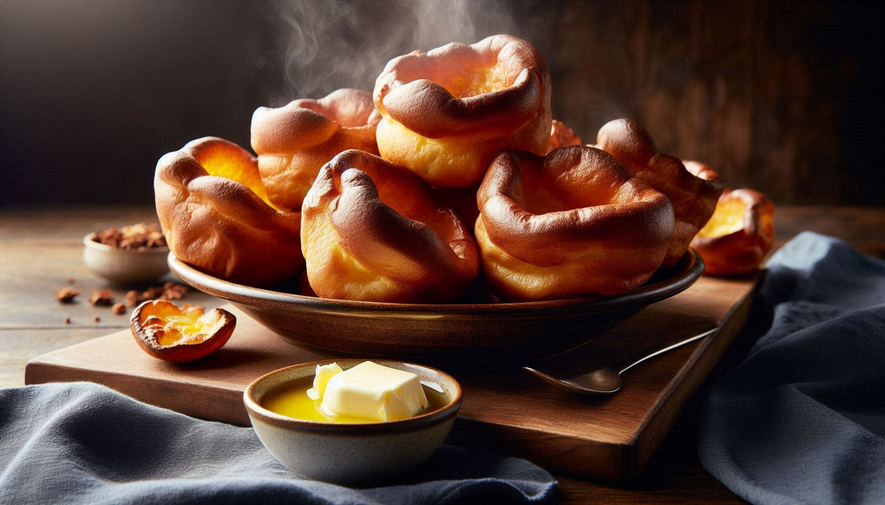

Yorkshire Puddings

Description:
Yorkshire pudding is a must-have accompaniment when you're serving a traditional British roast dinner!
- Prep Time: 10min
- Cook Time: 30min
- Total Time: 40min
- Servings: 12
Ingredients:
- 3 large eggs
- 1 cup milk
- 1 cup all-purpose flour
- 2 tablespoons butter
Directions:
- Gather all ingredients.
- Preheat the oven to 375 degrees F (190 degrees C).
- Beat eggs and milk together in a medium bowl.
- Stir in flour.
- Divide butter evenly into the cups of a 12-cup muffin tin, about 1/2 teaspoon per cup.
- Place the muffin tin in the preheated oven until butter has melted and is sizzling hot, 2 to 3 minutes.
- Remove the muffin tin from oven, and distribute batter evenly among each cup.
- Return to the oven and bake for 5 minutes.
- Reduce the heat to 175°C and bake until puffed and golden, without peeking, about 25 minutes more.